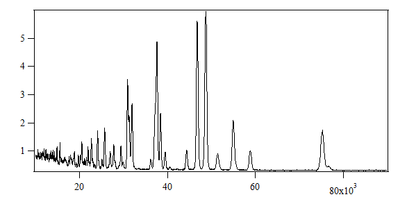
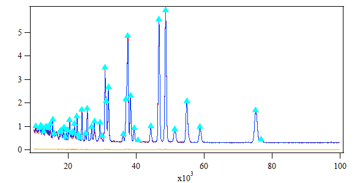
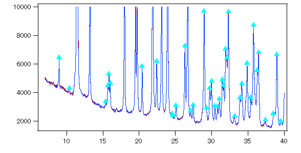
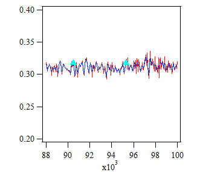
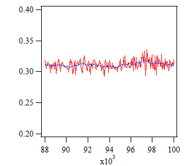

Instructions for PeakSearch CUI program
[English / Japanese]
Version 0.99 is the initial release of the PeakSearch program (download page in SourceForge.jp).
The same program is also implemented in powder auto-indexing software Conograph GUI,
and outputs an IGOR text file used for Conograph CUI.
The program executes peak-search for any kinds of 1-dimensional distributions (Figure 1) represented as a histogram data.

Figure 1 : Example of 1-dimensional distribution
Subsequently, an IGOR text file is outputted,
which contains the powder diffraction pattern and the following values of peaks with the peak-height more than a given threshold (Example):
- peak-positions
- peak-heights (estimated background is substracted from the y-value of the peaktop)
- full-widths-at-half-maximum (FWHM)
If you open the file with IGOR Pro, you can see a plot as in Figure 2 immediately.

Figure 2 : Output IGOR text file
FAQ
- The PeakSearch program requires the three following input files.
(Examples can be found in the "sample" folder.)
- A *.inp.xml file that includes information about input parameters
(Example)
- A cntl.inp.xml file that includes the names of the *.inp.xml file and the output file
(Example)
- A text file to give a 1-dimensional distribution. At present, the following three formats are available:
- XY
- IGOR
- Rietan
The errors of y-values in the third column of the XY and IGOR formats are used to compute a threshold.
If the third column is empty, the square roots of y-values are used as the errors.
- Copy one of the folders from the sample folder.
Modify the contents of the two xml-files and the name of the *.inp.xml file if necessary.
If you change the name of the *.inp.xml file, then it will be necessary to modify the contents of the cntl.inp.xml file accordingly.
- Open a command prompt or terminal window in your operating system.
Change the current folder to the same folder that contains the modified cntl.inp.xml file.
- Enter the absolute path to the PeakSearch.exe file on the command line and execute PeakSearch.
<Threshold>, <NumberOfPointsForSGMethod> are necessary to be modified
in order to obtain more successful results.
It is also necessary to set <Alpha2Correction> for powder patterns including α2 reflections of characteristic X-rays.
- <Threshold> on peak-heights influences on peak-search results,
because a peak at peak-position x is detected,
if and only if it has a peak-height more than (Threshold) × Err[y], where Err[y] is the value of error in the y-value of the distribution at x.
Our recommended value of <Threshold> is 3.0.
Adjust <Threshold> (to a value within 1--10 if the input observational errors are proper), if the result is not satisfactory.

Figure 3 : Example of a case of synchrotron data.
(By modifiying <Threshold>, it is possible to detect small diffraction peaks as well as peaks with high intensities.)
- <NumberOfPointsForSGMethod> is also an important parameter so as not to pick up background noise as peaks.
If this number is smaller, the smoothing curve is fit to local irregularity more finely.
In Figure 4.1, noises are picked up as peaks, because the smoothing curve almost coincides with the background noise.
|  |
 |
| Figure 4.1 : "NumberOfPointsForSGMethod" = 5 |
Figure 4.2 : "NumberOfPointsForSGMethod" = 25 |
- <Alpha2Correction> should be set to 1 if the powder pattern contains α2 peaks, or set to 0 otherwise.
If it is not Cu Kα2, <Kalpha1WaveLength> and <Kalpha2WaveLength> are necessary to be modified accordingly.
| |
Kα1 |
Kα2 |
| Ag | 0.5594075 | 0.563798 |
| Co | 1.788965 | 1.792850 |
| Cr | 2.289700 | 2.293606 |
| Cu | 1.540562 | 1.544398 |
| Fe | 1.936042 | 1.939980 |
| Mo | 0.709300 | 0.713590 |
You should send us a bug report with
all of the input and output files attached (including LOG_PEAKSEARCH.txt) to the following e-mail address:
- conograph-bugs (at) ml.post.kek.jp
The PeakSearch program currently utilizes an unpublished algorithm.
The versions of the source code are distributed as open source under the MIT license on the repository list of the Conograph project.
I would like to express my gratitude to those who offered powder diffraction patterns for the Conograph project.
[Back to top]